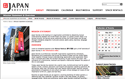
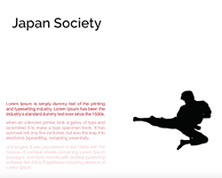
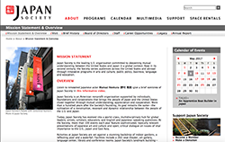
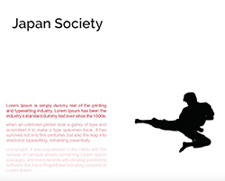

For the sign project I choose to use Japan Society as my cultural institution. Japan Society is located on 333 East 47th Street New York, NY 10017. At this cultural institution their mission is to “deepen mutual understanding between the United States and Japan in a global context. Now in its second century, the Society serves audiences across the United States and abroad through innovative programs in arts and culture, public policy, business, language and education.”
While researching the cultural institution I learned that they held an event known as “Karate Talk” that spoke of Okinawa, the Birthplace of Karate.This event stood out to meet because I have an interest and background in martial arts. I viewed this discovery as the perfect opportunity to create a project formulated on the context of martial arts, specifically karate.
The rising sun is the symbol of the Japanese flag so I incorporated that symbol as a starting point for my website. When entering the website you will notice that the sun rises and figures of martial arts masters transition in relation to the rising sun. In karate and the Japanese culture, practicing members of the art would do their forms towards the rising sun, which is why I chose to include that in my site. Also, the figures themselves are of the masters who were featured at the event, who viewers can see doing their technique below in a video with a description of the form they are doing appearing on the page.

 


